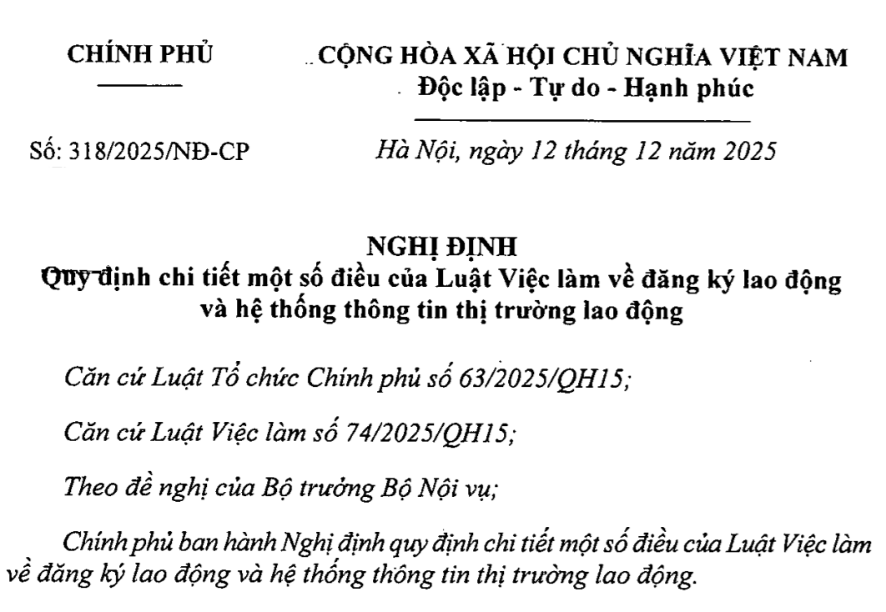

Ngày 12/12/2025, Chính phủ ban hành Nghị định 318/2025/NĐ-CP hướng dẫn Luật Việc làm về đăng ký lao động và hệ thống thông tin thị trường lao động.
Nghị định 318/2025/NĐ-CP có hiệu lực từ 01/01/2026.

Nội dung của Nghị định 318/2025/NĐ-CP như sau:
NGHỊ ĐỊNH QUY ĐỊNH CHI TIẾT MỘT SỐ ĐIỀU CỦA LUẬT VIỆC LÀM VỀ ĐĂNG KÝ LAO ĐỘNG VÀ HỆ THỐNG THÔNG TIN THỊ TRƯỜNG LAO ĐỘNG Căn cứ Luật Việc làm số 74/2025/QH15; Theo đề nghị của Bộ trưởng Bộ Nội vụ; Chính phủ ban hành Nghị định quy định chi tiết một số điều của Luật Việc làm về đăng ký lao động và hệ thống thông tin thị trường lao động.
Chương I
Điều 1. Phạm vi điều chỉnhQUY ĐỊNH CHUNG Nghị định này quy định về đăng ký lao động và hệ thống thông tin thị trường lao động theo các điều khoản sau đây của Luật Việc làm số 74/2025/QH15: 1. Thông tin đăng ký lao động và cơ sở dữ liệu về người lao động; quy định hồ sơ, trình tự, thủ tục, nơi đăng ký lao động; quy định việc tiếp nhận, quản lý, khai thác, kết nối, chia sẻ, sử dụng cơ sở dữ liệu về người lao động quy định tại khoản 6 Điều 17 Luật số 74/2025/QH15. 2. Hệ thống thông tin thị trường lao động, thông tin thị trường lao động quy định tại khoản 3 Điều 19, khoản 3 Điều 20 Luật số 74/2025/QH15. Điều 2. Đối tượng áp dụng 1. Người lao động theo quy định tại khoản 1 Điều 2 Luật số 74/2025/QH15. 2. Người sử dụng lao động theo quy định khoản 2 Điều 3 Bộ luật Lao động số 45/2019/QH14. 3. Cơ quan, tổ chức, cá nhân có liên quan đến việc đăng ký lao động, cơ sở dữ liệu về người lao động; xây dựng, quản lý hệ thống thông tin thị trường lao động.
Chương II
Mục 1. HỒ SƠ, TRÌNH TỰ, THỦ TỤC ĐĂNG KÝ, ĐIỀU CHỈNH THÔNG TIN ĐĂNG KÝ LAO ĐỘNGĐĂNG KÝ LAO ĐỘNG Điều 3. Đối tượng đăng ký lao động 1. Người lao động thuộc đối tượng tham gia bảo hiểm xã hội bắt buộc theo quy định tại khoản 1 Điều 2 Luật Bảo hiểm xã hội số 41/2024/QH15. 2. Người lao động đang có việc làm và không thuộc đối tượng tham gia bảo hiểm xã hội bắt buộc. 3. Người thất nghiệp là người đang không có việc làm, đang tìm kiếm việc làm và sẵn sàng làm việc. 4. Cán bộ, công chức, viên chức, lực lượng vũ trang nhân dân không thực hiện việc đăng ký, điều chỉnh thông tin đăng ký lao động theo quy định tại Nghị định này. 5. Người lao động tự kê khai hồ sơ đăng ký lao động và chịu trách nhiệm trước pháp luật về tính trung thực, chính xác của các thông tin đã kê khai; người sử dụng lao động có trách nhiệm thu thập, kê khai và cung cấp đầy đủ, chính xác, kịp thời thông tin về người lao động khi tuyển dụng, thay đổi hoặc chấm dứt quan hệ lao động theo quy định của Nghị định này; bảo đảm tính trung thực chính xác của thông tin cung cấp. Điều 4. Thông tin đăng ký lao động 1. Thông tin cơ bản của người lao động, gồm: Họ, chữ đệm và tên khai sinh; số định danh cá nhân; ngày, tháng, năm sinh; giới tính; dân tộc; nơi ở hiện tại (nơi thường trú hoặc nơi tạm trú). 2. Nhóm thông tin về giáo dục phổ thông, giáo dục nghề nghiệp, giáo dục đại học, chứng chỉ kỹ năng nghề và các chứng chỉ khác, gồm: a) Thông tin về trình độ giáo dục phổ thông cao nhất đạt được; b) Thông tin về cấp trình độ, lĩnh vực đào tạo đạt được của giáo dục nghề nghiệp; giáo dục đại học; c) Thông tin về chứng chỉ kỹ năng nghề quốc gia đã đạt được; d) Các chứng chỉ khác. 3. Nhóm thông tin về tình trạng việc làm và nhu cầu về việc làm, gồm: a) Thông tin về việc làm đang làm, gồm: chức vụ, chức danh nghề, nghề nghiệp, loại hợp đồng, địa điểm làm việc; b) Thông tin về người sử dụng lao động, gồm: tên người sử dụng lao động; mã số; loại hình; địa chỉ trụ sở chính; ngành kinh tế; c) Thông tin về tình trạng thất nghiệp, gồm: thời gian thất nghiệp; lý do thất nghiệp; d) Thông tin về nhu cầu việc làm là những thông tin về việc làm mong muốn có được, gồm: nghề nghiệp, loại hợp đồng, mức lương và chế độ phúc lợi, nơi làm việc. 4. Nhóm thông tin về bảo hiểm xã hội, bảo hiểm thất nghiệp, gồm: a) Thông tin về tình trạng tham gia đóng bảo hiểm xã hội, bảo hiểm thất nghiệp, gồm: mã số bảo hiểm xã hội, loại hình, loại bảo hiểm xã hội. b) Thông tin về tình trạng hưởng chế độ bảo hiểm xã hội, bảo hiểm thất nghiệp, gồm: chế độ, thời gian hưởng chế độ. 5. Nhóm thông tin về đặc điểm, đặc thù, gồm: a) Thông tin về người khuyết tật; b) Thông tin về người thuộc hộ nghèo, hộ cận nghèo, hộ có đất thu hồi; c) Thông tin về thân nhân của người có công với cách mạng; d) Thông tin về người hoàn thành nghĩa vụ quân sự, nghĩa vụ tham gia công an nhân dân. Điều 5. Hồ sơ, trình tự, thủ tục đăng ký lao động đối với người lao động thuộc đối tượng tham gia bảo hiểm xã hội bắt buộc 1. Hồ sơ đăng ký lao động là Tờ khai đăng ký tham gia bảo hiểm xã hội theo quy định tại khoản 1 Điều 27 Luật số 41/2024/QH15, trong đó bổ sung các thông tin quy định tại điểm a, b khoản 3 Điều 4 Nghị định này. Bảo hiểm xã hội Việt Nam có trách nhiệm ban hành Tờ khai đăng ký tham gia bảo hiểm xã hội. 2. Trình tự, thủ tục thực hiện: a) Người lao động cung cấp cho người sử dụng lao động những thông tin có liên quan tại Tờ khai quy định tại khoản 1 Điều này và chịu trách nhiệm về tính chính xác thông tin; b) Người sử dụng lao động đăng ký, điều chỉnh thông tin đăng ký lao động cho người lao động khi nộp hồ sơ đăng ký, điều chỉnh thông tin tham gia bảo hiểm xã hội theo quy định tại Luật Bảo hiểm xã hội và các văn bản hướng dẫn; c) Thông tin đăng ký lao động của người lao động sau khi được cơ quan bảo hiểm xã hội tiếp nhận, xử lý được đồng bộ, chia sẻ với cơ sở dữ liệu về người lao động. Điều 6. Hồ sơ, trình tự, thủ tục đăng ký lao động đối với người lao động đang có việc làm không thuộc đối tượng tham gia bảo hiểm bắt buộc, người thất nghiệp 1. Hồ sơ đăng ký lao động là Tờ khai điện tử theo mẫu ban hành kèm theo Nghị định này. 2. Hình thức đăng ký lao động: Trực tuyến. 3. Trình tự, thủ tục thực hiện: a) Người lao động truy cập vào Sàn giao dịch việc làm quốc gia (https://www.vieclam.gov.vn) hoặc trên ứng dụng định danh điện tử VNeID, chọn mục đăng ký, điều chỉnh thông tin đăng ký lao động và điền thông tin vào Tờ khai điện tử quy định tại khoản 1 Điều này; b) Hệ thống đăng ký lao động tiếp nhận, xử lý và trả kết quả đăng ký thành công ngay sau khi người lao động hoàn thành Tờ khai điện tử, nếu đăng ký không thành công hệ thống phản hồi lý do; c) Thông tin đăng ký lao động của người lao động được cập nhật, đồng bộ vào cơ sở dữ liệu về người lao động. 4. Trường hợp người lao động có nhu cầu tìm kiếm việc làm thì đăng ký tìm kiếm việc làm theo biểu mẫu quy định tại Nghị định của Chính phủ về dịch vụ việc làm trực tiếp tại Tổ chức dịch vụ việc làm công hoặc trực tuyến qua Sàn giao dịch việc làm quốc gia (https://www.vieclam.gov.vn) hoặc qua ứng dụng định danh điện tử VNeID. Điều 7. Điều chỉnh thông tin đăng ký lao động 1. Điều chỉnh thông tin đăng ký lao động trong trường hợp một hoặc nhiều thông tin sau thay đổi: a) Thông tin về chức vụ, chức danh nghề, nghề nghiệp, loại hợp đồng, địa điểm làm việc quy định tại điểm a khoản 3 Điều 4 Nghị định này; b) Thông tin về người sử dụng lao động quy định tại điểm b khoản 3 Điều 4 Nghị định này; c) Thông tin về thay đổi tình trạng từ người có việc làm sang người thất nghiệp; d) Thay đổi từ đang có việc làm hoặc thất nghiệp sang không tham gia hoạt động kinh tế (không có khả năng hoặc không có nhu cầu làm việc). 2. Hồ sơ, trình tự, thủ tục điều chỉnh thông tin đăng ký lao động quy định tại điểm a, b khoản 1 Điều này, thực hiện như sau: a) Trường hợp người lao động tham gia bảo hiểm xã hội bắt buộc có sự thay đổi thông tin đăng ký lao động theo quy định tại điểm a khoản 1 Điều này thì thực hiện điều chỉnh thông tin đăng ký lao động khi điều chỉnh thông tin đăng ký tham gia bảo hiểm xã hội theo quy định tại Điều 5 Nghị định này; b) Trường hợp người lao động đang có việc làm và không thuộc đối tượng tham gia bảo hiểm xã hội bắt buộc, người thất nghiệp thì thực hiện theo quy định tại Điều 6 Nghị định này. 3. Hồ sơ, trình tự, thủ tục điều chỉnh thông tin đăng ký lao động quy định tại điểm c khoản 1 Điều này thì thực hiện theo quy định tại Điều 6 Nghị định này. 4. Hồ sơ, trình tự, thủ tục điều chỉnh thông tin quy định tại điểm d khoản 1 Điều này thì thực hiện như sau: a) Người lao động truy cập vào Sàn giao dịch việc làm quốc gia (https://www.vieclam.gov.vn) hoặc trên ứng dụng định danh điện tử VNeID, chọn mục đăng ký, điều chỉnh thông tin đăng ký lao động và thực hiện điều chỉnh từ có việc làm hoặc thất nghiệp sang không tham gia hoạt động kinh tế theo nội dung Tờ khai điện tử tại khoản 1 Điều 6 Nghị định này; b) Hệ thống đăng ký lao động tiếp nhận, xử lý và trả kết quả điều chỉnh ngay sau khi người lao động hoàn thành Tờ khai điện tử, nếu đăng ký không thành công thì hệ thống phản hồi lý do; c) Thông tin điều chỉnh của người lao động được cập nhật, đồng bộ vào cơ sở dữ liệu về người lao động. 5. Trường hợp người lao động giao kết hợp đồng lao động với nhiều người sử dụng lao động có nhu cầu cập nhật bổ sung thì thực hiện như sau: a) Hồ sơ cập nhật thông tin lao động là Tờ khai điện tử theo mẫu ban hành kèm theo Nghị định này và giấy tờ chứng minh nghề nghiệp, nơi làm việc; b) Hình thức đăng ký, trình tự, thủ tục thực hiện theo quy định tại khoản 2 và khoản 3 Điều 6 Nghị định này.
Mục 2. TIẾP NHẬN, QUẢN LÝ, KHAI THÁC, KẾT NỐI, CHIA SẺ, SỬ DỤNG CƠ SỞ DỮ LIỆU VỀ NGƯỜI LAO ĐỘNG
Điều 8. Cơ sở dữ liệu về người lao động1. Cơ sở dữ liệu về người lao động bao gồm các thông tin quy định tại Điều 4 Nghị định này. 2. Dữ liệu được thu thập, cập nhật, đồng bộ vào cơ sở dữ liệu về người lao động, bao gồm: a) Thông tin quy định tại khoản 1 Điều 4 Nghị định này được xác thực, khai thác từ Cơ sở dữ liệu quốc gia về dân cư; b) Thông tin quy định tại khoản 2 Điều 4 Nghị định này được trích, chọn, kết nối, chia sẻ từ các cơ sở dữ liệu chuyên ngành của Bộ Giáo dục và Đào tạo; c) Thông tin quy định tại điểm a, c, d khoản 3 và điểm c khoản 5 Điều 4 Nghị định này được trích, chọn, kết nối, chia sẻ dữ liệu từ các cơ sở dữ liệu chuyên ngành của Bộ Nội vụ; d) Thông tin quy định tại điểm b khoản 3 Điều 4 Nghị định này được kết nối, chia sẻ từ Cơ sở dữ liệu quốc gia về đăng ký doanh nghiệp và các cơ sở dữ liệu khác có liên quan; đ) Thông tin quy định tại khoản 4 Điều 4 Nghị định này được trích, chọn kết nối, chia sẻ dữ liệu từ cơ sở dữ liệu quốc gia về Bảo hiểm; e) Thông tin quy định tại điểm a khoản 5 Điều 4 Nghị định này được trích, chọn, kết nối, chia sẻ dữ liệu từ các cơ sở dữ liệu do Bộ Y tế quản lý; g) Thông tin quy định tại điểm b khoản 5 Điều 4 được trích, chọn, kết nối, chia sẻ từ các cơ sở dữ liệu do Bộ Nông nghiệp và Môi trường quản lý; h) Trường hợp thông tin quy định tại Điều 4 Nghị định này chưa thể thu thập theo quy định tại điểm a, b, c, d, đ, e và g khoản 2 Điều này thì kết nối, chia sẻ từ nguồn Cơ sở dữ liệu tổng hợp quốc gia và các nguồn dữ liệu khác có liên quan. 3. Thông tin trong cơ sở dữ liệu về người lao động được cập nhật, điều chỉnh từ các nguồn sau: a) Kết quả của quá trình thực hiện các thủ tục hành chính, nghiệp vụ về đăng ký lao động, điều chỉnh thông tin đăng ký lao động; b) Từ các cơ sở dữ liệu khác có liên quan khi có thay đổi. 4. Cơ sở dữ liệu về người lao động được xây dựng, cung cấp, chia sẻ, kết nối và quản lý tập trung thống nhất toàn quốc, tuân thủ theo quy định của pháp luật về dữ liệu, bảo vệ dữ liệu cá nhân, an toàn thông tin mạng và pháp luật khác có liên quan. Điều 9. Cơ quan chủ quản và quản lý nhà nước đối với cơ sở dữ liệu về người lao động 1. Bộ Nội vụ là cơ quan chủ quản, tiếp nhận cơ sở dữ liệu về người lao động; chịu trách nhiệm xây dựng, phát triển cơ sở dữ liệu về người lao động. 2. Trung tâm dữ liệu quốc gia là đơn vị đảm bảo cơ sở hạ tầng công nghệ thông tin của cơ sở dữ liệu về người lao động. Điều 10. Kết nối, chia sẻ dữ liệu trong cơ sở dữ liệu về người lao động Việc kết nối, chia sẻ thông tin cơ sở dữ liệu về người lao động từ Cơ sở dữ liệu tổng hợp quốc gia, cơ sở dữ liệu quốc gia, cơ sở dữ liệu chuyên ngành, hệ thống thông tin bảo đảm tuân thủ theo quy định của pháp luật về kết nối, chia sẻ dữ liệu của cơ quan nhà nước phù hợp với Khung kiến trúc tổng thể quốc gia số. Điều 11. Phương thức khai thác, sử dụng dữ liệu trong cơ sở dữ liệu về người lao động 1. Việc khai thác và sử dụng dữ liệu trong cơ sở dữ liệu về người lao động thực hiện qua các phương thức sau đây: a) Kết nối, chia sẻ dữ liệu giữa Cơ sở dữ liệu tổng hợp quốc gia, cơ sở dữ liệu quốc gia, cơ sở dữ liệu chuyên ngành, hệ thống thông tin khác với cơ sở dữ liệu về người lao động; b) Cổng dữ liệu quốc gia, Cổng Dịch vụ công quốc gia, Cổng thông tin điện tử, hệ thống thông tin giải quyết thủ tục hành chính; c) Nền tảng định danh và xác thực điện tử; d) Ứng dụng định danh quốc gia; đ) Thiết bị, phương tiện, phần mềm do Trung tâm dữ liệu quốc gia cung cấp. 2. Việc khai thác và sử dụng dữ liệu trong cơ sở dữ liệu về người lao động để thực hiện các nhiệm vụ sau: a) Cơ quan quản lý nhà nước về việc làm thực hiện việc quản lý và hoạch định chính sách về lao động, việc làm; cung cấp thông tin về thị trường lao động, phân tích, dự báo cung - cầu lao động cho cơ quan, tổ chức, cá nhân; b) Người lao động sử dụng thông tin của bản thân để thực hiện việc cung cấp, xuất trình khi người sử dụng lao động hoặc cơ quan quản lý nhà nước có thẩm quyền đề nghị; c) Người sử dụng lao động được khai thác thông tin trong cơ sở dữ liệu về người lao động thuộc quyền quản lý, sử dụng.
Chương III
Điều 12. Hệ thống thông tin thị trường lao độngHỆ THỐNG THÔNG TIN THỊ TRƯỜNG LAO ĐỘNG 1. Hệ thống thông tin thị trường lao động bao gồm: a) Dữ liệu thị trường lao động được khai thác từ Cơ sở dữ liệu tổng hợp quốc gia, cơ sở dữ liệu quốc gia, cơ sở dữ liệu về người lao động và các thành phần dữ liệu khác có liên quan đến thị trường lao động; b) Hạ tầng công nghệ thông tin; c) Hệ thống phần mềm ứng dụng, dịch vụ phần mềm, nền tảng điện toán đám mây phục vụ xây dựng, quản lý, khai thác sử dụng thông tin thị trường lao động. 2. Hệ thống thông tin thị trường lao động được xây dựng và quản lý tập trung, thống nhất từ trung ương đến địa phương; có tính mở; đáp ứng các tiêu chuẩn, quy chuẩn về cơ sở dữ liệu, định mức kinh tế - kỹ thuật; bảo đảm kết nối, chia sẻ, cung cấp dữ liệu kịp thời với Cơ sở dữ liệu tổng hợp quốc gia, cơ sở dữ liệu quốc gia và các cơ sở dữ liệu chuyên ngành khác có liên quan nhằm cung cấp thông tin thị trường lao động cho các cơ quan, tổ chức, cá nhân đáp ứng yêu cầu phát triển kinh tế - xã hội. Điều 13. Thông tin thị trường lao động 1. Thông tin về cung lao động, cầu lao động, kết nối cung - cầu lao động, gồm: a) Thông tin, dữ liệu về dân số không hoạt động kinh tế, dân số từ đủ 15 tuổi trở lên, lực lượng lao động; b) Thông tin, dữ liệu về lao động có việc làm; c) Thông tin, dữ liệu về lao động thiếu việc làm; người thất nghiệp; lao động không sử dụng hết tiềm năng; d) Thông tin, dữ liệu về người lao động tìm kiếm việc làm; nhu cầu tuyển, sử dụng lao động; kết quả hoạt động dịch vụ việc làm; đ) Thông tin về các chương trình, kế hoạch hỗ trợ việc làm, phát triển thị trường lao động; e) Thông tin dự báo về cung - cầu lao động. 2. Thông tin về đào tạo, trình độ kỹ năng nghề, gồm: a) Thông tin, dữ liệu về lao động đã qua đào tạo; b) Thông tin, dữ liệu về trình độ chuyên môn kỹ thuật, lĩnh vực đào tạo, ngành đào tạo; c) Thông tin, dữ liệu về các chứng chỉ, kỹ năng nghề. 3. Thông tin về xu hướng tìm kiếm việc làm và nhu cầu sử dụng lao động, gồm: a) Thông tin về xu hướng tìm kiếm việc làm theo ngành kinh tế, nghề nghiệp, trình độ chuyên môn kỹ thuật và các điều kiện làm việc khác; b) Nhu cầu sử dụng lao động, vị trí việc làm, ngành kinh tế, nghề nghiệp, ngành đào tạo, trình độ chuyên môn kỹ thuật đang có nhu cầu tuyển dụng; c) Thông tin dự báo nhu cầu sử dụng lao động. 4. Thông tin về tiền lương và thu nhập của người lao động, gồm: a) Thông tin về tiền lương, thưởng, thu nhập bình quân của người lao động; b) Thông tin về các chế độ phúc lợi, đãi ngộ. Điều 14. Nguồn thu thập thông tin, dữ liệu 1. Thông tin thị trường lao động quy định tại Nghị định này được thu thập từ các nguồn sau: a) Kết quả thực hiện các thủ tục hành chính nghiệp vụ của các cơ quan nhà nước có thẩm quyền; b) Từ Cơ sở dữ liệu tổng hợp quốc gia, cơ sở dữ liệu quốc gia, cơ sở dữ liệu về người lao động, cơ sở dữ liệu chuyên ngành và các cơ sở dữ liệu khác có liên quan; c) Từ số liệu, kết quả, báo cáo các chương trình điều tra thống kê, khảo sát; d) Từ dữ liệu hành chính. 2. Cơ quan quản lý hệ thống thông tin thị trường lao động có trách nhiệm tiếp nhận các thông tin, dữ liệu do các cơ quan, tổ chức chia sẻ, cung cấp theo quy định để tích hợp vào hệ thống thông tin thị trường lao động. Điều 15. Hạ tầng công nghệ thông tin 1. Hạ tầng công nghệ thông tin của hệ thống thông tin thị trường lao động trung ương bao gồm: hệ thống máy chủ, máy trạm, các trang thiết bị đảm bảo kết nối mạng, thiết bị đảm bảo an toàn mạng, an ninh mạng, hệ thống đường truyền kết nối internet, thiết bị lưu trữ và các thiết bị khác. 2. Hạ tầng kỹ thuật công nghệ thông tin thị trường lao động tại địa phương bao gồm: máy trạm, hệ thống đường truyền kết nối internet và các thiết bị khác. Điều 16. Hệ thống phần mềm, ứng dụng phục vụ quản lý, khai thác, sử dụng hệ thống thông tin thị trường lao động 1. Hệ thống phần mềm, ứng dụng phục vụ đăng ký lao động, hệ thống thông tin thị trường lao động được tích hợp trên Sàn giao dịch việc làm quốc gia (https://www.vieclam.gov.vn). 2. Phần mềm ứng dụng phục vụ cập nhật thông tin, số liệu, tích hợp dữ liệu được dùng chung, phần mềm ứng dụng phổ biến, tra cứu thông tin trên phạm vi toàn quốc, có địa chỉ truy cập https://www.ttttld.vieclam.gov.vn và https://www.pbttttld.vieclam.gov.vn. Điều 17. Xây dựng hệ thống hạ tầng kỹ thuật công nghệ thông tin và phần mềm phục vụ quản lý, vận hành hệ thống thông tin thị trường lao động 1. Việc xây dựng hệ thống hạ tầng kỹ thuật công nghệ thông tin và phần mềm phục vụ quản lý, vận hành hệ thống thông tin thị trường lao động bao gồm các hoạt động: a) Thiết lập, nâng cấp, duy trì hạ tầng kỹ thuật công nghệ thông tin; b) Xây dựng, nâng cấp hệ thống phần mềm để quản lý, vận hành hệ thống thông tin thị trường lao động; c) Đào tạo, tập huấn, bồi dưỡng nâng cao năng lực công chức, viên chức và người lao động. 2. Bộ Nội vụ chủ trì việc tổ chức xây dựng hạ tầng kỹ thuật công nghệ thông tin tại trung ương và hệ thống phần mềm phục vụ cập nhật thông tin, số liệu, tích hợp dữ liệu an toàn, mã hóa, kiểm soát truy cập rõ ràng để bảo vệ dữ liệu cá nhân và đảm bảo tuân thủ quy định của pháp luật về bảo vệ thông tin cá nhân; bảo vệ dữ liệu cá nhân; bảo vệ bí mật nhà nước; an toàn thông tin mạng; an ninh mạng; công bố, tra cứu thông tin, số liệu, chia sẻ dữ liệu. Điều 18. Chia sẻ, cung cấp thông tin, dữ liệu 1. Các bộ, cơ quan ngang bộ và các ngành có trách nhiệm cung cấp các thông tin như sau: a) Bộ Tài chính chia sẻ, cung cấp thông tin, dữ liệu về đăng ký doanh nghiệp; thu hút các vốn đầu tư nước ngoài vào Việt Nam; đăng ký đầu tư; tình hình lao động tham gia bảo hiểm xã hội, bảo hiểm thất nghiệp; b) Bộ Giáo dục và Đào tạo cung cấp về tình trạng, số lượng học sinh, sinh viên thuộc các cơ sở giáo dục nghề nghiệp, giáo dục đại học; c) Bộ Công Thương, Bộ Nông nghiệp và Môi trường, Bộ Xây dựng, Bộ Khoa học và Công nghệ, Bộ Văn hoá, Thể thao và Du lịch, Bộ Dân tộc và Tôn giáo, Bộ Giáo dục và Đào tạo chia sẻ, cung cấp thông tin, dữ liệu về kế hoạch phát triển và nhu cầu sử dụng lao động; d) Cơ quan thống kê trung ương chia sẻ, cung cấp thông tin, dữ liệu thị trường lao động từ các cuộc điều tra, thống kê về dân số, lao động - việc làm, mức sống dân cư, doanh nghiệp, cơ sở sản xuất kinh doanh; d) Trung tâm Dữ liệu quốc gia chia sẻ, cung cấp thông tin, dữ liệu có liên quan đến thị trường lao động từ các cơ sở dữ liệu thuộc phạm vi quản lý, lưu trữ tại Trung tâm Dữ liệu quốc gia. 2. Ủy ban nhân dân cấp tỉnh có trách nhiệm chia sẻ, cung cấp thông tin thị trường lao động thuộc phạm vi quản lý của địa phương và thực hiện đầy đủ các chế độ báo cáo liên quan đến thông tin thị trường lao động theo quy định tại các văn bản quy phạm pháp luật hiện hành. 3. Bộ Nội vụ có văn bản yêu cầu hoặc hình thức khác bảo đảm có xác nhận về việc yêu cầu cung cấp thông tin, dữ liệu có liên quan đến thông tin thị trường lao động trong đó chỉ rõ loại thông tin, dữ liệu; mức độ chi tiết, khối lượng thông tin, dữ liệu; tần suất truy cập thông tin, dữ liệu; phương thức cung cấp thông tin, dữ liệu; thời hạn cần cung cấp thông tin, dữ liệu. Điều 19. Tiếp nhận và xử lý, lưu trữ thông tin, dữ liệu 1. Bộ Nội vụ tiếp nhận các thông tin, dữ liệu từ các bộ, ngành và Ủy ban nhân dân cấp tỉnh theo quy định tại khoản 1, 2 Điều 18 Nghị định này; tiếp nhận các thông tin dữ liệu về người lao động từ các bộ, ngành theo quy định tại khoản 2 Điều 8 Nghị định này. 2. Bộ Nội vụ có trách nhiệm xử lý thông tin, dữ liệu trước khi được tích hợp, lưu trữ vào hệ thống thông tin thị trường lao động. Nội dung xử lý thông tin, dữ liệu bao gồm: a) Kiểm tra, đánh giá việc tuân thủ quy định, quy trình trong việc thu thập thông tin, dữ liệu; b) Kiểm tra, đánh giá về cơ sở pháp lý, mức độ tin cậy của thông tin, dữ liệu; c) Tổng hợp, sắp xếp, phân loại thông tin, dữ liệu phù hợp với nội dung quy định. 3. Đối với trường hợp chỉnh sửa thông tin, dữ liệu trên hệ thống thông tin thị trường lao động, trên cơ sở văn bản hoặc đề nghị trực tiếp của các cơ quan, tổ chức đề nghị về việc được chỉnh sửa thông tin, dữ liệu đã chia sẻ, cung cấp, cơ quan quản lý về lao động, việc làm có trách nhiệm phối hợp kiểm tra, rà soát, chỉnh sửa, cập nhật, bổ sung nhằm đảm bảo tính phù hợp, đầy đủ, chính xác của thông tin, dữ liệu. 4. Đối với các thông tin, dữ liệu được cập nhật từ cơ sở dữ liệu chuyên ngành thì cơ quan quản lý cơ sở dữ liệu chuyên ngành đó có trách nhiệm đảm bảo về tính chính xác của thông tin, dữ liệu. 5. Thông tin, dữ liệu thị trường lao động phải được số hóa, lưu trữ và bảo quản theo quy định của pháp luật về lưu trữ và các quy định chuyên ngành để đảm bảo an toàn, thuận tiện trong việc quản lý, khai thác, sử dụng thông tin. 6. Cơ quan, đơn vị được giao trách nhiệm quản lý hệ thống thông tin phải có kế hoạch thực hiện số hóa những thông tin chưa ở dạng số; phải có các biện pháp quản lý, nghiệp vụ và kỹ thuật đối với hệ thống thông tin để bảo đảm an toàn thông tin, dữ liệu số về thị trường lao động. Điều 20. Cập nhật, điều chỉnh thông tin, dữ liệu 1. Thông tin, dữ liệu trong hệ thống thông tin thị trường lao động được cập nhật, điều chỉnh từ các nguồn sau: a) Kết quả điều chỉnh, bổ sung của quá trình thực hiện các thủ tục hành chính, nghiệp vụ của các cơ quan nhà nước có thẩm quyền; b) Đề xuất sửa đổi, bổ sung của cơ quan, tổ chức khi thay đổi hoặc phát hiện các thông tin, dữ liệu trong hệ thống thông tin thị trường lao động chưa đầy đủ, chính xác; c) Từ các cơ sở dữ liệu có liên quan khi có thay đổi. 2. Các cơ quan, tổ chức quy định tại khoản 1, khoản 2 Điều 18 Nghị định này có trách nhiệm cập nhật điều chỉnh thông tin, dữ liệu thuộc lĩnh vực phụ trách khi có thay đổi hoặc cần bổ sung và thông báo cho Bộ Nội vụ để cập nhật, điều chỉnh thông tin, dữ liệu trong hệ thống thông tin thị trường lao động. Điều 21. Quản lý hệ thống thông tin thị trường lao động 1. Bộ Nội vụ xây dựng thống nhất quản lý hệ thống thông tin thị trường lao động trên phạm vi toàn quốc. 2. Cơ quan quản lý hệ thống thông tin thị trường lao động được phép đầu tư, thuê hạ tầng kỹ thuật công nghệ thông tin, hệ thống phần mềm phục vụ quản lý, vận hành, khai thác theo quy định pháp luật về ngân sách nhà nước, pháp luật về đấu thầu. 3. Cơ quan quản lý hệ thống thông tin thị trường lao động thực hiện các nguyên tắc, giải pháp, quy định của pháp luật về an ninh mạng, an toàn thông tin mạng; trực tiếp hoặc giao tổ chức có đủ điều kiện năng lực đảm nhận thực hiện quản lý, vận hành hệ thống phần mềm, các máy chủ, thiết bị tin học, mạng máy tính, bảo đảm sự vận hành của hệ thống; cấp, giao tài khoản, quyền truy cập cho cơ quan, tổ chức, cá nhân để kê khai, chia sẻ, cung cấp, khai thác thông tin, dữ liệu thị trường lao động và thu hồi tài khoản, quyền truy cập đối với tổ chức, cá nhân vi phạm quy định của Nghị định này. 4. Nội dung xây dựng, quản lý hệ thống thông tin thị trường lao động bao gồm: a) Đầu tư cơ sở hạ tầng, trang thiết bị công nghệ thông tin phục vụ xây dựng hệ thống thông tin thị trường lao động; b) Quản lý, duy trì, khai thác, sử dụng hệ thống thông tin thị trường lao động; c) Đào tạo nhân lực phục vụ công tác xây dựng, quản lý, duy trì, khai thác, sử dụng hệ thống thông tin thị trường lao động và phân tích, dự báo thị trường lao động; d) Điều tra, khảo sát, thu thập, xử lý, cập nhật, tích hợp thông tin vào hệ thống thông tin thị trường lao động; đ) Phát triển các công cụ, thuê chuyên gia xây dựng, tư vấn phục vụ phân tích, dự báo thông tin thị trường lao động; e) Thực hiện các hoạt động bảo đảm an toàn, an ninh thông tin. 5. Việc xây dựng, quản lý hệ thống thông tin thị trường lao động do ngân sách nhà nước cấp trên cơ sở dự toán hàng năm của Bộ Nội vụ và các nguồn kinh phí hợp pháp khác theo quy định của pháp luật.
Chương IV
Điều 22. Trách nhiệm của Bộ Nội vụTỔ CHỨC THI HÀNH 1. Chủ trì, phối hợp với các cơ quan có liên quan tổ chức triển khai, hướng dẫn, kiểm tra, đôn đốc việc thực hiện Nghị định này. 2. Chủ trì, phối hợp với các cơ quan có liên quan trong việc xây dựng, phát triển, quản lý, bảo vệ và sử dụng thông tin, dữ liệu về người lao động và thị trường lao động; bảo đảm an toàn hệ thống thông tin, quản trị dữ liệu, kiểm soát truy cập, chia sẻ, kết nối và khai thác dữ liệu. 3. Tổ chức xây dựng, nâng cấp hệ thống phần mềm thống nhất để quản lý, vận hành, khai thác cơ sở dữ liệu về người lao động và hệ thống thông tin thị trường lao động; quản lý hệ thống thông tin thị trường lao động ở trung ương; chia sẻ, cung cấp thông tin thị trường lao động cho các cơ quan, tổ chức, cá nhân theo quy định của pháp luật. 4. Thực hiện các nhiệm vụ khác được giao tại Nghị định này. Điều 23. Trách nhiệm của Bộ Công an 1. Phối hợp với Bộ Nội vụ xây dựng quy định về kết nối và chia sẻ thông tin liên quan đến thị trường lao động không thuộc phạm vi bí mật nhà nước do Bộ Công an quản lý phù hợp với các quy định về bảo mật và an toàn thông tin. 2. Phát triển ứng dụng định danh điện tử VNeID để thực hiện đăng ký, điều chỉnh thông tin đăng ký lao động. 3. Chia sẻ, bàn giao cơ sở dữ liệu về người lao động đã tổ chức thu thập từ Chương trình mục tiêu Quốc gia giảm nghèo bền vững giai đoạn 2021 - 2025 và phối hợp với Bộ Nội vụ để chia sẻ, tiếp tục phát triển cơ sở dữ liệu về người lao động đảm bảo quy định của pháp luật về an ninh, an toàn và bảo mật. Điều 24. Trách nhiệm của các bộ, cơ quan ngang bộ, cơ quan thuộc Chính phủ và Ủy ban nhân dân cấp tỉnh 1. Các bộ, cơ quan ngang bộ, cơ quan thuộc Chính phủ và Ủy ban nhân dân cấp tỉnh có trách nhiệm chỉ đạo các cơ quan, đơn vị trực thuộc thực hiện việc cung cấp, chia sẻ, kết nối thông tin về người lao động và thông tin thị trường lao động thuộc thẩm quyền theo quy định của Nghị định này. 2. Ủy ban nhân dân tỉnh chủ trì việc tổ chức xây dựng, phát triển hệ thống thông tin thị trường lao động phục vụ mục tiêu của địa phương đảm bảo tuân thủ theo các tiêu chuẩn, quy chuẩn kỹ thuật và Khung kiến trúc tổng thể quốc gia số; tổng hợp, cung cấp thông tin về thị trường lao động trên địa bàn theo quy định của Nghị định này; tổ chức, tuyên truyền, hướng dẫn người lao động trên địa bàn thực hiện việc đăng ký, điều chỉnh thông tin đăng ký lao động theo quy định tại Nghị định này. Điều 25. Hiệu lực thi hành 1. Nghị định này có hiệu lực thi hành từ ngày 01 tháng 01 năm 2026. 2. Hồ sơ, trình tự đăng ký, điều chỉnh thông tin đăng ký lao động đối với người lao động thuộc đối tượng tham gia bảo hiểm xã hội bắt buộc theo quy định tại Điều 5, Điều 7 Nghị định này được thực hiện từ ngày 01 tháng 7 năm 2026. 3. Hồ sơ, trình tự đăng ký, điều chỉnh thông tin đăng ký lao động đối với người lao động đang có việc làm không thuộc đối tượng tham gia bảo hiểm bắt buộc, người thất nghiệp theo quy định tại Điều 6, Điều 7 Nghị định này được thực hiện từ ngày 01 tháng 01 năm 2027. 4. Bộ trưởng, Thủ trưởng cơ quan ngang bộ, Thủ trưởng cơ quan thuộc Chính phủ, Chủ tịch Ủy ban nhân dân tỉnh, thành phố trực thuộc trung ương chịu trách nhiệm thi hành Nghị định này.
Phụ lục
(Kèm theo Nghị định số 318/2025/NĐ-CP ngày 12 tháng 12 năm 2025 của Chính phủ)
HƯỚNG DẪN ĐIỀN THÔNG TIN Tờ khai điện tử đăng ký, điều chỉnh thông tin đăng ký lao động
1. Họ, chữ đệm và tên khai sinh: Nhập đầy đủ họ tên tiếng Việt có dấu
2. Ngày, tháng, năm sinh: Nhập đủ ngày, tháng, năm sinh 3. Giới tính: Tích vào ô lựa chọn giới tính của người lao động (nếu là nam thì tích vào “nam” hoặc nếu là nữ thì tích vào “nữ”) 4. Số định danh cá nhân: Nhập số ghi trên căn cước, căn cước công dân, chứng minh nhân dân, định danh cá nhân của người lao động 5. Mã số BHXH: Nhập mã số BHXH đã được cơ quan BHXH cấp (người lao động tra cứu mã số bảo hiểm xã hội tại địa chỉ: https://baohiemxahoi.gov.vn) 6. Nơi thường trú: Chọn danh mục tỉnh/xã nơi đang thường trú của người lao động 7. Nơi tạm trú: Chọn danh mục tỉnh/xã nơi đang tạm trú của người lao động (chỉ nhập thông tin nếu khác nơi thường trú) 8. Đối tượng đặc thù (nếu có): Tích vào ô lựa chọn. Trường hợp tích vào ô “Dân tộc thiểu số” thì tiếp tục chọn danh mục dân tộc. 9. Thông tin về trình độ của người lao động 9.1. Trình độ giáo dục phổ thông cao nhất đã tốt nghiệp/đạt được: Nhập và chọn danh mục lớp học cao nhất đã đạt được/đã tốt nghiệp. 9.2. Trình độ chuyên môn kỹ thuật cao nhất đạt được: Tích vào ô lựa chọn và tiếp tục nhập, chọn chuyên ngành/nghề đào tạo hoặc được công nhận theo Danh mục giáo dục, đào tạo (Quyết định số 01/2017/QĐ-TTg ngày 17/01/2017 về việc ban hành Danh mục giáo dục, đào tạo của hệ thống giáo dục quốc dân) 10. Thông tin về tình trạng tham gia hoạt động kinh tế: Tích vào ô lựa chọn. - Người có việc làm là người làm bất cứ việc gì (không bị pháp luật cấm) để tạo ra các sản phẩm hàng hóa hoặc cung cấp các dịch vụ nhằm mục đích tạo ra thu nhập cho bản thân và gia đình. Đối với lựa chọn ô “Người có việc làm” thì tiếp tục nhập các thông tin ở mục 11, 12, 13, 15. - Người thất nghiệp là người đang không có việc làm, đang tìm kiếm việc làm và sẵn sàng làm việc. Đối với lựa chọn ô “Người thất nghiệp” thì tiếp tục nhập các thông tin ở mục 11, 14, 15. - Khi người lao động điều chỉnh thông tin từ có việc làm hoặc thất nghiệp sang không tham gia hoạt động kinh tế thì lựa chọn và tích vào ô “Không tham gia hoạt động kinh tế” và tiếp tục chọn lý do không tham gia hoạt động kinh tế. 11. Tình trạng tham gia bảo hiểm xã hội (BHXH): Tích vào ô lựa chọn - Bảo hiểm xã hội bắt buộc là loại hình bảo hiểm xã hội do Nhà nước tổ chức mà người lao động, người sử dụng lao động thuộc đối tượng tham gia bảo hiểm xã hội bắt buộc phải tham gia. - Bảo hiểm xã hội tự nguyện là loại hình bảo hiểm xã hội do Nhà nước tổ chức mà công dân Việt Nam tự nguyện tham gia và được lựa chọn mức đóng, phương thức đóng phù hợp với thu nhập của mình. 12. Thông tin về việc làm đang làm: 12.1. Chức vụ/chức danh nghề: Nhập và chọn chức vụ, chức danh nghề theo danh mục chức vụ hoặc chức danh nghề nghiệp 12.2. Nghề nghiệp: Nhập và chọn tên nghề nghiệp mà người lao động đang làm theo danh mục Danh mục nghề nghiệp (Quyết định số 34/2020/QĐ-TTg ngày 26/11/2020 về việc ban hành danh mục nghề nghiệp Việt Nam) 12.3. Loại hợp đồng lao động (HĐLĐ): Tích vào ô lựa chọn Người đăng ký lựa chọn và tích vào ô phù hợp với loại hợp đồng lao động đã ký với người sử dụng lao động: - Hợp đồng lao động là sự thỏa thuận giữa người lao động và người sử dụng lao động về việc làm có trả công, tiền lương, điều kiện lao động, quyền và nghĩa vụ của mỗi bên trong quan hệ lao động. - Hợp đồng lao động xác định thời hạn là hợp đồng mà trong đó hai bên xác định thời hạn, thời điểm chấm dứt hiệu lực của hợp đồng trong thời gian không quá 36 tháng kể từ thời điểm có hiệu lực của hợp đồng. - Hợp đồng lao động không xác định thời hạn là hợp đồng mà trong đó hai bên không xác định thời hạn, thời điểm chấm dứt hiệu lực của hợp đồng; Thời gian bắt đầu thực hiện HĐLĐ (ngày/tháng/năm): Người lao động nhập đủ ngày, tháng, năm theo HĐLĐ đã ký với người sử dụng lao động. 12.4. Địa điểm làm việc: - Chọn danh mục tỉnh/xã nơi mà người lao động đang làm việc. Trường hợp người lao động làm việc không cố định địa điểm làm việc thì lựa chọn tỉnh, xã nơi thường xuyên làm việc trong tháng nhất. - Tích vào ô lựa chọn về địa điểm làm việc có thuộc khu công nghiệp, khu kinh tế, khu công nghệ cao không. 13. Thông tin về người sử dụng lao động Người sử dụng lao động là doanh nghiệp, cơ quan, tổ chức, hợp tác xã, hộ gia đình, cá nhân có thuê mướn, sử dụng người lao động làm việc cho mình theo thỏa thuận 13.1. Tên người sử dụng lao động: Nhập đầy đủ tên doanh nghiệp, cơ quan, tổ chức, hợp tác xã, hộ gia đình, cá nhân mà người lao động đang làm việc 13.2. Mã số: - Đối với doanh nghiệp thì nhập đầy đủ mã số doanh nghiệp. - Đối với người sử dụng lao động khác thì nhập mã số thuế. 13.3. Loại hình: Tích vào ô lựa chọn phù hợp với loại hình của người sử dụng lao động - Tự làm: - Hộ gia đình sản xuất nông, lâm, ngư nghiệp, làm muối. - Cơ sở kinh doanh cá thể. - Hộ kinh doanh do một cá nhân hoặc các thành viên hộ gia đình đăng ký thành lập và chịu trách nhiệm bằng toàn bộ tài sản của mình đối với hoạt động kinh doanh của hộ. - Hợp tác xã, liên hiệp hợp tác xã, tổ hợp tác. - Doanh nghiệp là tổ chức có tên riêng, có tài sản, có trụ sở giao dịch, được thành lập hoặc đăng ký thành lập theo quy định của pháp luật nhằm mục đích kinh doanh + Doanh nghiệp nhà nước bao gồm các doanh nghiệp do Nhà nước nắm giữ trên 50% vốn điều lệ. + Doanh nghiệp ngoài nhà nước bao gồm các doanh nghiệp do tư nhân nắm giữ trên 50% vốn điều lệ. + Doanh nghiệp có vốn đầu tư nước ngoài (Doanh nghiệp FDI) bao gồm các doanh nghiệp có vốn đầu tư nước ngoài. - Khu vực nhà nước bao gồm các cơ quan, đơn vị thuộc hệ thống tổ chức Đảng Cộng sản Việt Nam; các cơ quan, đơn vị trong bộ máy nhà nước Việt Nam; các cơ quan, đơn vị thuộc Mặt trận Tổ quốc Việt Nam; cơ quan, đơn vị thuộc tổ chức chính trị - xã hội; đơn vị sự nghiệp công lập. - Đơn vị sự nghiệp ngoài nhà nước được thành lập theo quy định của pháp luật, có tư cách pháp nhân. - Khu vực nước ngoài bao gồm các tổ chức phi Chính phủ, tổ chức tự nguyện, các tổ chức cộng đồng... hoạt động có thể có lợi nhuận và cần có lợi nhuận nhưng toàn bộ lợi nhuận đó phải dùng để đầu tư cho các hoạt động của tổ chức chứ không phải chia cho các thành viên, hay sử dụng cho người sáng lập hoặc người có quyền kiểm soát tổ chức đó. - Tổ chức đoàn thể khác. 13.4. Địa chỉ trụ sở chính: Chọn danh mục tỉnh/xã nơi cơ quan, đơn vị, tổ chức có trụ sở chính. 13.5. Ngành kinh tế: Nhập và chọn danh mục ngành nghề kinh doanh chính của người sử dụng lao động theo Hệ thống ngành kinh tế cấp 3 (Quyết định số 36/2025/QĐ-TTg ngày 29/9/2025 của Thủ tướng Chính phủ ban hành hệ thống ngành kinh tế Việt Nam) 14. Thông tin về tình trạng thất nghiệp 14.1. Thời gian thất nghiệp: Lựa chọn và tích vào ô phù hợp với người lao động 14.2. Lý do thất nghiệp: Lựa chọn và tích vào ô phù hợp với người lao động. Đây là trường thông tin không bắt buộc. 15. Nhu cầu tìm kiếm việc làm: Lựa chọn và tích vào ô phù hợp với nhu cầu của người lao động. Trường hợp lựa chọn “Có” thì người lao động tiếp tục điền thông tin Phiếu đăng ký tìm kiếm việc làm theo quy định của Chính phủ về dịch vụ việc làm. Trường hợp các danh mục áp dụng được thay thế, sửa đổi bởi các văn bản của cơ quan có thẩm quyền thì hệ thống đăng ký lao động được cập nhật theo quy định. |